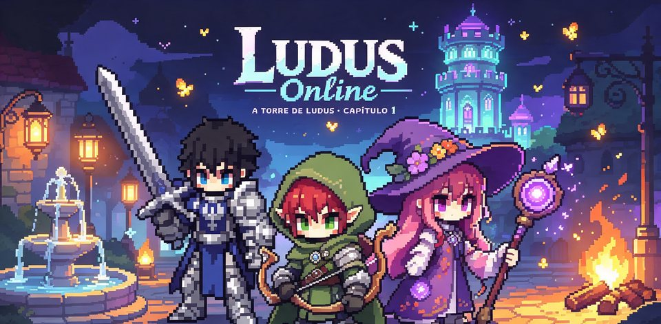

LUDUS'BAN beta
Um fliperama em pixel art neon que também é rede social de jogos, com contas, pagamentos e servidor próprio. Abre no navegador e pode ser instalado como app no celular e no PC.
É o meu maior projeto: planejado, construído, publicado e mantido por mim, do visual ao servidor, com mais de 110 entregas desde outubro.
o que tem dentro
Clássicos, casuais, 12 jogos de mesa por turnos e duelos online 1x1 ao vivo, como Pong, Tetris Duelo e Arena Snake.
Feed, chat com abas e mídia, clãs, comunidades, histórias de 30 s, perfil com mural e depoimentos.
Loja com Pix e cartão pelo Mercado Pago, assinatura Premium e saldo conferido só no servidor.
Classes e subclasses, mapas ligados, chefões, forja, mochila e duelo 1x1 conferido no servidor.
Painel do dono e dos moderadores, travas anti-spam, recordes protegidos e respostas prontas no suporte.
App instalável que funciona offline, testes automáticos, monitoramento de erros, backup diário e Política de Privacidade.